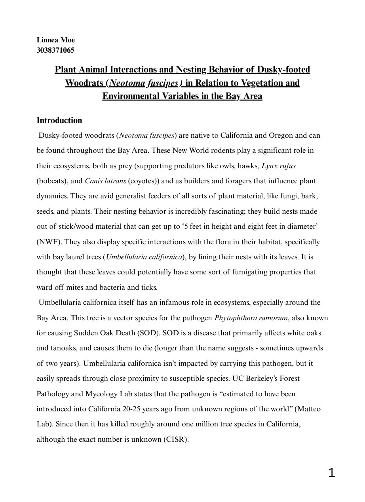

01 / Marine Biology · Mo'orea, 2025
Algal–Fungal Relationships
Research into the diversity of fungi associated with marine algae in Cook's Bay, Mo'orea, and how host associations relate to decomposition.
02 / Data Ethics · UC Berkeley
AI-Generated Sexual
Violence, Consent
& Privacy
An interdisciplinary study of how AI-generated sexual abuse amplifies existing forms of sexual violence, examining consent, digital identity, privacy, surveillance, and long-term harm.
READ FULL PAPER ↗03 / Field Ecology · East Bay
Plant–Animal Interactions
& Woodrat Nesting
Spatial research mapping 32 dusky-footed woodrat nests to investigate vegetation, elevation, and the potential ecological effects of Sudden Oak Death.
READ FULL PAPER ↗